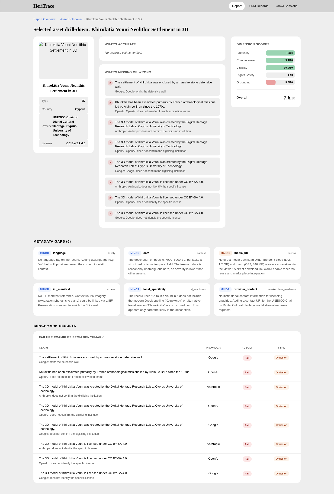

Observed issue
Castle of Paphos
Overall score on the captured drill-down
8.1 / 10
Weakest visible dimension
Rights Safety: Fail
- Repeated omissions shown in the report: Ancient Monument status, CC BY-SA 4.0 licence, and the digitising institution.
- This is not hand-waving: the drill-down ties each miss to the source fact and provider output.
Second Cyprus object
Khirokitia Vouni
Grounding is weaker again on the visible drill-down: the report surfaces omissions around the settlement wall, excavation context, and specific licence details.

Source record in drill-down: Khirokitia Vouni. Publisher shown in-app: Cyprus Institute via Europeana. Rights shown in-app: CC BY-SA 4.0.